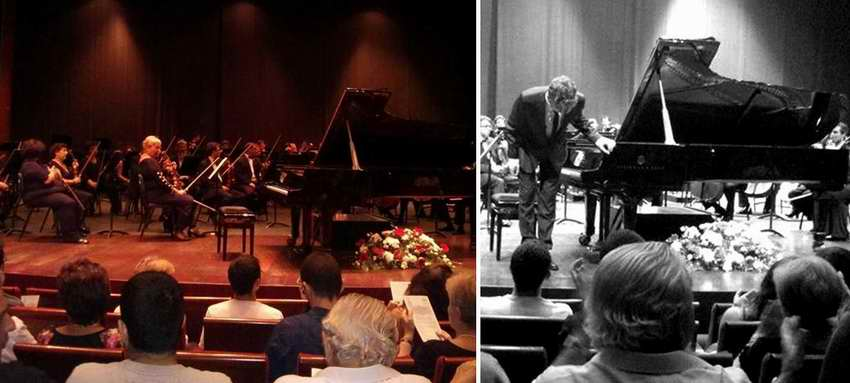
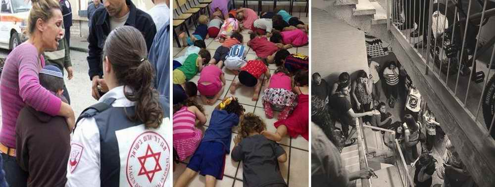
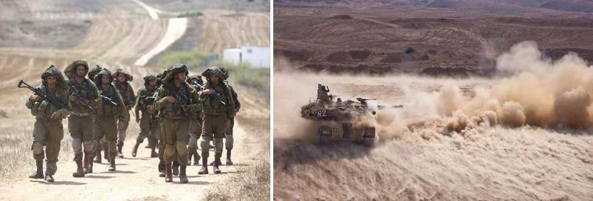
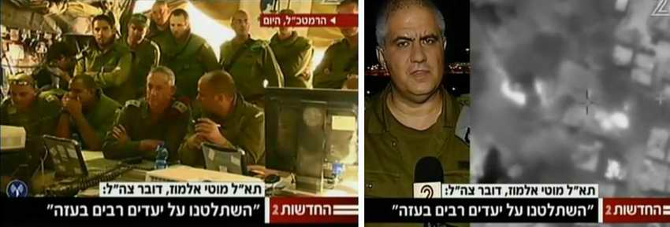

Заключительный КОНЦЕРТ
Заключительный концерт сезона ришонского оркестра... По дороге обсуждали, как действовать, если сирена...

Вчера я взяла time out. Не смотреть новости, интернет. Поехали на заключительный концерт сезона ришонского оркестра. Когда в концерте участвует мой сын, никакие ракеты не остановят.
По дороге обсуждали, как действовать, если сирена, - понимая сюрность ситуации. Полупустой зал, интеллигентные лица, красиво одетые дамы. Боковые места заняты, середина почти свободна. Мы заняли самые лучшие места в середине, так, чтобы я видела руки пианистов.
Это был концерт победителей израильского фестиваля Тель Хай. Исполняли произведения Моцарта, Прокофьева, Скрябина.
Перед началом концерта вышел директор оркестра и объяснил публике, что в случае ракетного обстрела, музыка заглушает сирену, поэтому будет голосовое предупреждение. Надо пройти к боковым выходам возле сцены. Выходы в бельэтаже не рекомендуются - там много стекла. Я огляделась и поняла, почему середину не занимали.
Убрала звук в мобильном и иногда поглядывала информацию - где обстрелы. "Ну что там снаружи?"- спрашивает дама справа. "Южные города под обстрелом" . "Погиб солдат, моя подруга его знала"- говорит соседка слева. К счастью, концерт не прервался ни разу и прошёл с большим успехом. Мне даже удалось заснять восхитительных музыкантов и поместить в фейсбук.
И ещё... Я подняла руку, чтобы сын увидел, где мы сидим. Он кивнул. И почти все зрители кому-то из своих махали и оркестранты кивали и улыбались. "Молодцы, что пришли поддержать нас". "Мы все молодцы и никакой террор и никакой Хамас не заставит музыку умолкнуть.
автор: Анна Грандель
Эти фото, как будто разных миров и времен. Но израильская реальность июля 2014г. именно такова. Идет война "Цук Эйтан" /"Непоколебимая скала"/ на юге Израиля и в секторе Газа. У нас все, как в опере, где каждый исполняет свою партию одновременно - пушки стреляют, тыл исполняет предписания службы тыла, а музыканты дают концерты. В общем, все идет своим чередом.

Шок после прямого попадания ракеты в соседнюю комнату. Дети юга Израиля: при звуке сирены ложимся на пол, руки на голове. Если у вас нет бомбоубежища, выходим на лестничную клетку и выжидаем десять минут. Важно аккуратно выполнить указания службы тыла - это спасает жизни.

Сотни репатриантов прибыли в Израиль из США и Канады. Многие из них избрали местом своего жительства именно юг Израиля, который сейчас под постоянным обстрелом. 20 молодых людей объявили о своем намерении немедленно мобилизоваться в ряды Армии Обороны Израиля ЦАХАЛь.

Талантливым молодым музыкантам в Израиле предоставляется возможность, проходя срочную военную службу в Армии Обороны Израиля, одновременно продолжать учебу в музыкальной академии. Так что на студенческих концертах часто можно видеть музыкантов в военной форме.